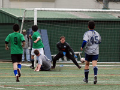
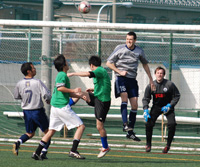
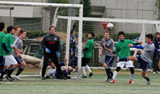

|
YC&AC, Sunday 14th February.
Another glorious sunny day at YC&AC and Three more points for the Silver Machine - although they were pushed all the way by a plucky Zion side.
After a rather dull start to the game, things livened up when Hide Yoshioka was put clean through on the left hand side, cut in towards goal & finished exquisitely, drilling his shot in to the bottom right corner. YCAC were hoping this would open the floodgates and that seemed to be the case a few minutes later when a cross from the left was crashed home by Anthony Savage from 20 yards - 3 in 3 for the Ginger. Hide then came close to scoring his second of the day, smashing the ball against cross bar & before the half was over Dickie Philo had an effort cleared off the line & YCAC were denied a penalty even though it seemed the Zion player had cleared the ball off the line with his arm. To add insult to injury, a quick Zion counter attack caught YCAC napping and the game was 2-1 at the halfway point.
The second half went much the same way as the first. YCAC were struggling to play at their usual level & were being made to work very hard by their opposition. Hide’s second goal of the game briefly gave the home side some breathing space, however they failed to convert a host of chances and their lead was once again cut down to just one as Zion notched a 2nd goal their efforts deserved, making it a nervy last 10 minutes for the current league champions.
Luckily for them Keeper Danny Rawlings & centre backs Dickie and Matt were in fine form. With just a few minutes to go, YCAC were finally able to kill the game off as a cross come shot was unfortunately put into his own net by the unlucky Zion defender.
Not exactly a game for the purists, but 3 vital points for the home side.
Report by Russ Philp
|